| 511 | Cases | |
| 55 | Types |
" " construction (6 types, 111 cases) " construction (6 types, 111 cases) | |
e.g. (the cost of isyen) isyen) | |
 | adjective""construction(7 types, 60 cases) |
| e.g. 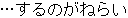 (the aim is to) | |
 | listing type construct ion (5 types, 44 cases) |
| e.g. (not only tobut also to) |
Expression
| 634 | Cases | |
| 29 | Types |
| Typical form(8 types,415 cases) | |
| e.g. (to developand sell) | |
| Connecting joshi type connection(8 types,132 cases) |
| e.g. 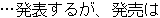 (will announce, but sales will be) | |
| Word repetition type connection (13 types,87 cases) |
| e.g. 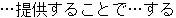 (willthrough affiliation with) |
| 336 | Cases | |
| 38 | Types |
| General noun type(7 types, 49 cases) | |
| e.g. 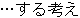 (is planning to) | |
| Formal noun type(14 types,117 cases) |
| e.g. 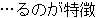 (typically does) | |
| Connecting joshi type(8 types, 62 cases) |
| e.g. 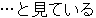 (is viewed as) | |
 | Other(9 types,108 cases) |
| e.g. (after having stated that) |
Type Noun in a Case
| 285 | Caces, | |
| 5 | Types |
| Objective case type(2 types, 258 cases) | |
| e.g. (conclude a contract) | |
| Nominative case type(3 types,27 cases) |
| e.g. 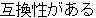 (is interchangeable) |
| 405 | Cases | |
| 39 | Types |
| Auxiliary yogen type(60 types,111 cases) | |
| e.g. 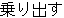 (embark on, lean forward) | |
| Compound word type yogen(13 types,39 cases) |
| e.g. 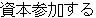 (to participate in capitalization, to invest jointly) | |
| Auxiliary yogen connecting type yogen(25 types, 255cases) |
| e.g. 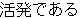 (is active) |
(not including general verbs and
"sa" declining verbs)
| 413 | Cases | |
| 114 | Types |
" " declining verbs and verbs with a noun root plus " " declining verbs and verbs with a noun root plus "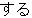 " | |
| e.g. 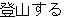 (mountain climbing + undertake) | |
| Model type ending(29 types,241 cases) |
| e.g. 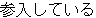 (is participating in) | |
| Taigen ending(78 types,164 cases) |
| e.g. (is overyen) | |
| " "sentence ending(7 types, 8 cases) "sentence ending(7 types, 8 cases) |
| e.g. 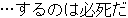 (forto happen is inevitable) |
| 78 | Cases | |
| 11 | Types |
" "case type(4 types, 44 cases) "case type(4 types, 44 cases) | |
| e.g. 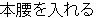 (make a serious effort to) | |
| " 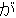 "case type(2 types, 14 cases) |
| e.g. 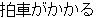 (gather speed) | |
| " 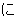 "case type(3 types, 17 cases) |
| e.g. 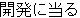 (undertake development) |
Expressions
| 691 | Cases | |
| 4 | Types |
| Connecting case type compound word(257 cases) | |
| e.g. (centered around ) | |
| Adverbial type compound(236 cases) |
| e.g. 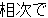 (one after another) | |
| Participial case type compound(89 cases) |
| e.g. (the largestin) | |
| Participial adjuective type compound (109 cases) |
| e.g. (conventional, former) |
Expression
| 3,117 | Cases | |
| 7 | Types |
| Ordinary noun type (1870 cases) |
e.g. | 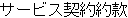 : Service agreement provisions) | ||
| Proper noun type (390 cases) |
e.g. | PC9800:a model corresponding to the PC9800 Series 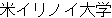 :University of Illinois,U.S. | |
| Expression of time (283 cases) |
e.g. | :since 15 years ago 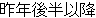 :since the latter half of last year | |
| Quantity expression (320 cases) |
e.g. | 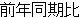 22.8%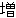 :an increase of 22.8% over the same period of the prevous year | |
| Cognate case expression (3 types, 254 cases) |
e.g. | 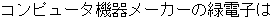 : Midori Electronics, a computer apparatus maker |
3. Concepts of Evaluation Model
3.1 Basic Idea of Quality Evaluation Model
(1) Structure of MT system ALT-J/E system consists of two major processes, source language analysis and target language generation as shown in Fig. 1. These will be referred to as the analytical phase and the conversion/generation phase. The conventional translation system relying on the transfer method usually divides the processing phase into three phases such as the analytical, conversion and generation phases. ALT-J/E is already aware of conversion to the target language at the analytic stage, so that the conventional stage of conversion become a process that spans both the analytic and generation phase. Conversion is regarded here as a portion of the generation phase and divides the entire translation process into two phases. However, the conventional three phases can also be considered as same these two phase construction, if the conversion process can be evaluated for each expression.
|
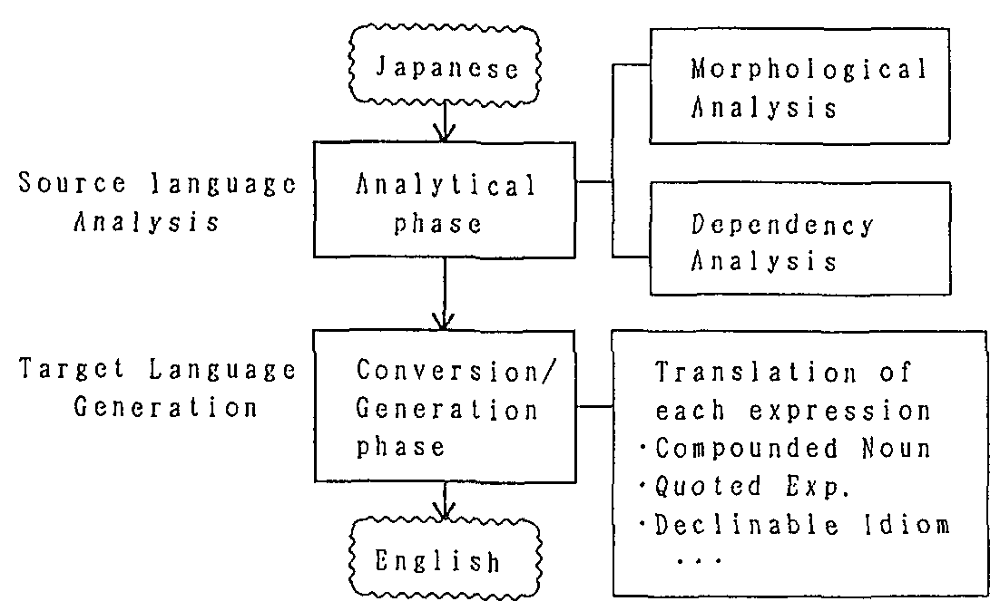 |
The analytical phase consists of the morphological and dependency analyses*2.
The conversion/generation phase consists of numerous phases. But, if a source expression is correctly analyzed in the analytical phase and it the generation mechanism for each expression works correctly, translation results should become almost understandable*3, regardless of whether it is good English*4 or not.
(2) Remarks for evaluation model The essential meaning of the above thoughts on phase separation is as follows. There are normally numerous types of expressions mixed in a single actual sentence. These expressions have mutual reactions that would be brought about when they are combined together. Then the translation quality of the entire sentence cannot be broken down into evaluations of the expressions contained. This method takes these mutual reactions into consideration and separates the evaluation of the analytical phase from the evaluation of the conversion/generation phase. Various types of expression are mixed in the analytical phase and their reactions are taken into consideration. After this has been accurately analyzed, evaluation of each individual expression can be conducted.
3.2 Target Quality for a Practical Machine Translation System
(1) Target quality for translation The objective of machine translation is to have a finished product in which the contents of an entire article can easily be understood almost without error. Normally, newspaper articles consist of a number of sentences and an understanding of the outline of an article does not require a completely accurate translation of all of the sentences.
As the passing line for a practical system, therefore, we shall assume as a quality target to have 70%*5 of translation ratio (the ratio of understandable translation) for each sentence contained in an article.
(2) Technical quality target In machine translation, a process error in any one of phases will result in an inaccurate product. In considering the probability of accuracy for each phase, the analytical phase consists of uniform processes which are commonly applied to all kinds of expressions, whereas the conversion/generation phase consists of a variety of processes depending on types of expressions.
It is relatively difficult to improve the accuracy of the latter phase. With these factors in mind, the target yield rate for each phase needed to arrive at a translation with an final translation ratio of 70% was calculated (Fig. 2). Converting these yield rates, target accuracy rate for each phase are as follows.
| Morphological Analysis | | 0.95/1.00=95.0% | ||
| Dependency Analysis | 0.90/0.95=94.7% | |||
| Conversion/Generation | | 0.70/0.90=77.8% | ||
|
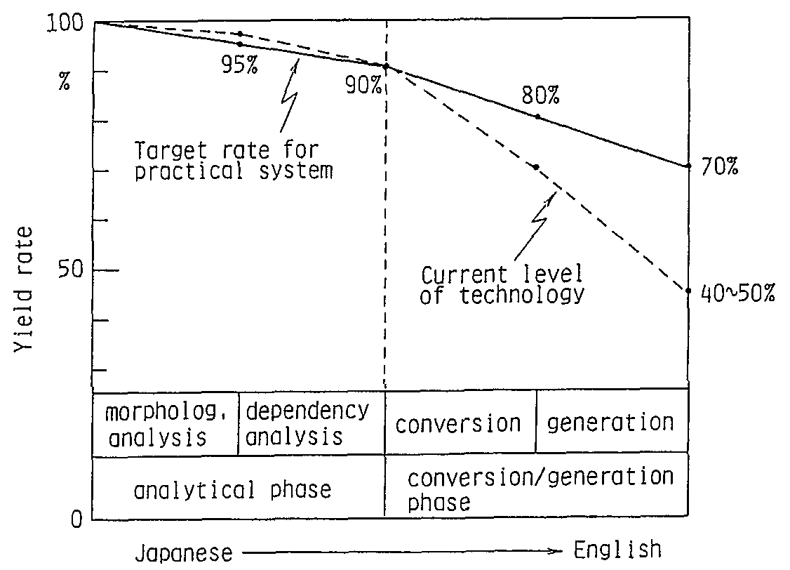 |
4. The Machine Translation Quality Evaluation Model and Its Application to ALT-J/E
4.1 Analytical Phase Evaluation Model
(1) Accuracy of morphological analysis
Assume the average number of words in a sentence to be nm. Assume also that the probability of the words of interest being accurately isolated from the rest of the sentence and of having the parts of speech and other syntactic attributes accurately appraised (i.e. word accuracy) to be pm. When all of the words in a sentence have been accurately analyzed, morphological analysis of the sentence can be said to be accurate.
Therefore the probability of accuracy of morphological analysis Pm can be expressed by the following equation.
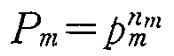 |
then, | 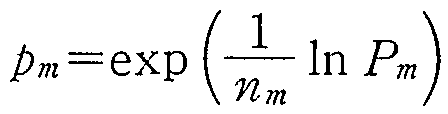 |
(1) |
Assuming from the target accuracy ratio for practical use of the product that Pm=0.95 (See Fig. 2), and from Table 1 that nm=21.2, the accuracy per word for purposes of morphological analysis needs to be over 99.8%
(2) Accuracy rate of dependency analysis
In dependency analysis, dependencies are analyzed in relationship to all "bunsetsu" (phrase). Dependencies between "Bunsetsu" are determined as pairs of dependent phrase and supporting phrase. All bunsetsu become a dependent phrase and all bunsetsu excepting the first one but including a period (terminal mark of a sentence) becomes a supporting phrase. Thus, we can regard the number of pairs to be the same as the number of bunsetsu.
If we assume the probability of each dependent and supporting pair determined accurately to be pd, dependency analysis is accurate when all the dependent and support phrases have been accurately determined. Therefore, the probability of accurate dependent and support pairing is
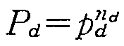 |
then, | 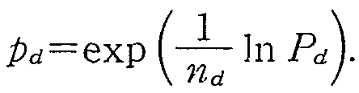 |
(2) |
From Fig. 2, the value Pd=0.947 and from Table 1 the value nd=8.35 are substituted. To achieve the practical target, the accuracy rate of the dependent and support pair needs to be over 99.4%.
(3) Observation The relation between Equation (1) and (2) in the case of newspaper articles is illustrated in Fig. 3. The technical difficulty in improving both word accuracy in morphological analysis and pair accuracy in dependency analysis increase sharply in both cases above approximately the 98% level. However, it is confirmed from the experiments that the current level of technology has achieved this objective in ALT-J/E.
|
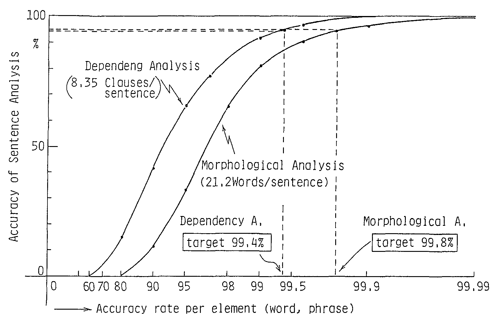 |
4.2 Accuracy Rate of the Conversion/ Generation Phase
(1) Conversion/generation accuracy rate
As described before, the causes of translation failures are classified in Table 2. We shall evaluate the conversion/generation rate by seeing whether the expressions taken up in this table can be accurately translated or not.
We shall assume the number of types of expression to be i, and that i=1 to 9, i.e., any one of the 9 types of expression as listed in Table 2.
| EX) | In the case of "connection within compound sentence expression", i = 2. |
Assume the maximum number of times each expression can appear in one sentence of the original to be Ni, and that the average number of times it actually appears to be n.
| EX) | For i=2, Ni = 3 (from the observation of 1 000 sample sentences) and ni=634 cases / 1 000 sentences = 0.634 (Table 2). |
The probability of the type of expression will be translated accurately when it appears is assumed to be pi.
| EX) | For i = 2, p = 0.8 (from individual experiments described later) |
With a given sentence, let us consider the probability Pi of type i in this sentence being translated without error. The expression of type i has the chance of appearing Ni times and actually appears n, times. Therefore, for any one chance, it appears with the probability of ni/Ni. When it actually appears, the probability of error in translation is 1 -pi. Thus, the probability of not making an error in translation for every appearance is
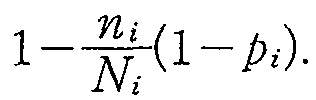 |
When there is no error in all Ni chances, this sentence can be said to have cleared the type i expression. The probability of clearing type i expression is
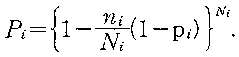 |
(3) |
| EX) | For i=2, | |
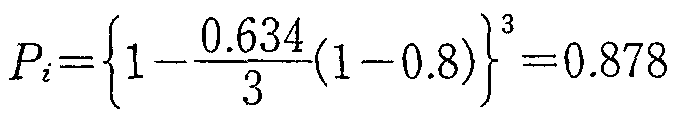 |
Thus, accuracy of processing PG of the conversion/ generation phase is
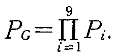 |
(4) |
(2) Application of current level technology
Based on experience with the Japanese-English translation experiment
system ALT-J/E, the feasibility of the above model is verified. The
ni and Ni values are given in
Table 3. Current rate of accuracies pi obtained from
individual experiments*6 on
various types of expression are as also listed in Table
3. Substituting these values into Eq. (4), P
| PG = 0.48. | (5) |
| NO | Type of expression | ni | Ni | pi |
| 1 | Special construction | 0.511 | 2 | 0.8 |
| 2 | Connection within compound sentence expression | 0.634 | 3 | 0.8 |
| 3 | Quotation-reporting expression | 0.336 | 2 | 0.9 |
| 4 | Predicate with a declinable noun in a case | 0.285 | 3 | 0.95 |
| 5 | Compound object expression | 0.405 | 3 | 0.95 |
| 6 | Special sentence ending object | 0.413 | 1 | 0.9 |
| 7 | Declinable idiom expression | 0.078 | 1 | 0.95 |
| 8 | Functional compound word expression | 0.691 | 6 | 0.9 |
| 9 | Compound word combining successive noun expression | 3.117 | 8.35 | 0.9 |
Translation experiments*7 dealing with newspaper articles reveal current translation acceptability rates of about of 40% to 50%. Current analytical phase accuracy rate is about 90%. Thus, the translation/generation phase accuracy rate is estimated to be about 45% to 55%. This coincides with results of Eq. (5), which was obtained as accuracy rate for the individual expressions above.
(3) Relationship between translation rates of expression groups and the total accuracy rate of conversion/generation phase For case study, assuming the following relationship to hold true for translation accuracy p, for all 9 types of expression
| p1 = p2 = p9 = p | (6) |
the relationship between p and Pc would be as shown in Fig. 4.
|
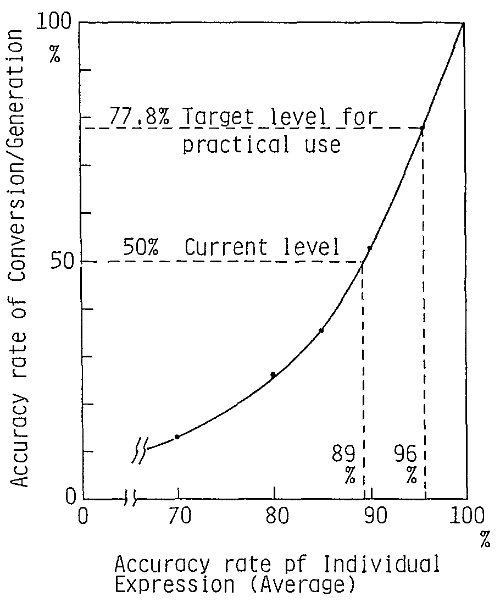 |
Conversion/generation rate at the practical level according to Sec. 3.2 shows PG > 0.778; therefore the translation accuracy rate for all types of expressions necessary according to Fig. 4 shows p >= 0.96. In contrast, current pz average accuracy rate p according to the same diagram shows p = 0.89. A difference of about 7% between the two figures remains.
(4) Bottle neck of translation quality of each expression In actual practice, weight of importance will differ according to which of 9 expressions is involved. As a third case study, it is attempted to identify which of the 9 expressions would cause failure in achieving the target accuracy rate. This results in the graph shown in Fig. 5. If one out of 9 expressions should fall below line shown in this figure, achievement of quality required of a practically applicable product would be impossible.
|
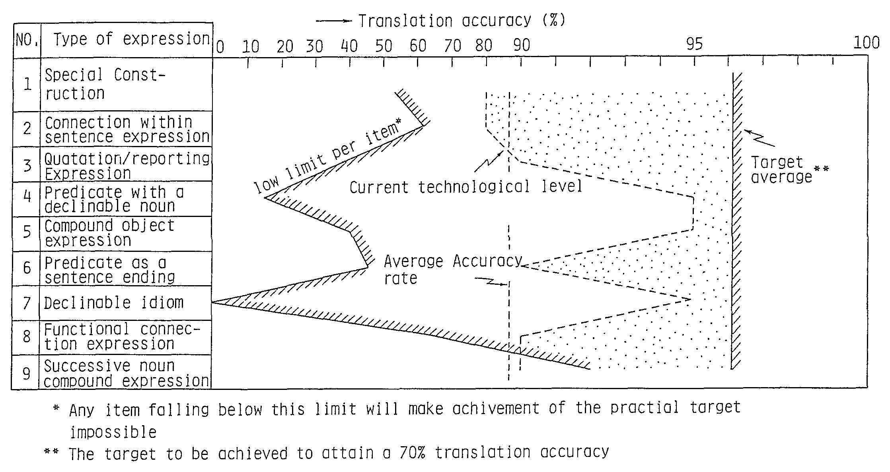 |
(5) Conversion/generation accuracy improvement from improved individual expression translation rates To examine the effects of improvements of various types of expression on the entire conversion/generation rate, changes in the accuracy rate pi of the types of expression under observation were assumed to be dpi, and changes in the conversion/generation accuracy rate PG were assumed to be dPG(i). Since the value of dPG(i) depends also on the value of pi(j/=i), the following three cases need to be considered.
| a) | At current technical levels: dPG(1)(i) | |
| When in relation to all i, pi is in the neighborhood of the present level (Table 2). | ||
| b) | At average target levels: dPG(2)(i) | |
| When p1 = p2 = p9 = 0.96. | ||
| c) | At maximum efficiency : dPG(3)(i) | |
| When p1 = p2 = p9 = 1.0. |
Assuming pi = 0.01(1%) and calculating dPG(i) for the above 3 cases results in Fig. 6. This figure reveals that the effects dPG(i) vary, depending on the type i, of expressions. However, in the foregoing 3 cases the effects are approximately equivalent.
| dPG(2)(i) / dPG(1)(i) = 1.8 (approximately constant) | (7) | |
| dPG(3)(i)/ dPG(1)(i)= 2.2 (approximately constant) |
|
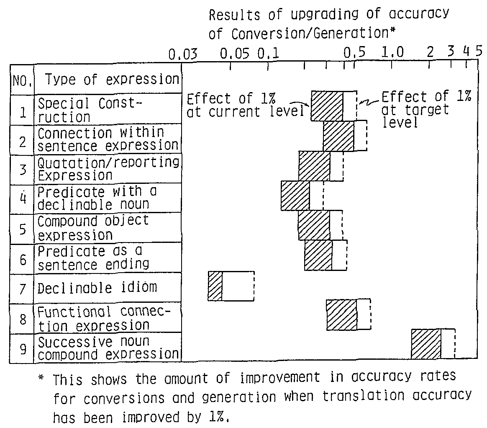 |
4.3 Summary of Quality Model Evaluation Results
(1) Analytical phase technology To achieve the practical translation quality, a word accuracy rate of over 99.8% for morphological analysis, and a dependence and supporting pair accuracy rate of over 99.4% for dependency analysis is necessary. Current technical levels for both morphological and dependency analyses have almost achieved these rates.
(2) Conversions/generation phase technology To achieve the target rate of over 77.8% in a conversion/generation phase, an average translation accuracy rate of over 96% for individually observed types expression is necessary. Current values are at about 89%, so an average of about 7% improvement is required.
With expressions for which translation rates are in excess of 90%, it would be difficult to achieve an additional 7% improvement. For specially structured sentences and connections in compound sentences, further improvement in successful translation ratios is necessary. For consecutive noun compounds, current accuracy rates range in the neighborhood of 90%. The frequency of their appearance is high and therefore quality improvement is vital. Without such improvements, achievement of practical utility is impossible.
5. Summary
An evaluation method is proposed which estimate translation quality based on translation technologies and source text characteristics and applied to Japanese to English machine translation system ALT-J/E. Technological problems of the translations of lead texts in newspaper articles are evaluated.
Assuming 70% acceptability to be a practical level of quality, the number of words and bunsetsu indicate that the morphological and dependency analysis technologies would require accuracy rates per word and per bunsetsu as high as 99.8% and 99.4 %, respectively. Current technology has reached these levels. But the precision of translation for individual expressions is lower than expected values so acceptability rates for the entire text drop to between 40% and 50%. To achieve an acceptability rate of 70%, it is necessary to achieve an average 7% improvement in all 9 types of expressions mentioned in this study and thus achieve a individual translation ratio of 96%.
To upgrade the translation rates of these expressions, it will be necessary to establish techniques for analysis of the meanings of joshi, translation of expressions that combine noun clauses and compounded words, handling connections and embedded phrases, and verification of ellipsis and paratactical construction.
References
- (1)
- Nagao, Tsujii, Nakamura, Sakamoto, Toriumi and Sato :
Outline of Science and Technological Agency Mechanical Translation Project,
Information Processing, Vol.26, No.10, pp.1203-1213 (1985).
- (2)
- Nagao and Tsujii :
World Selection and Process of Structural Conversion in Machine Translation,
Information Processing, Vol.26, No.11, pp.1261-1270 (1985).
- (3)
- Uchida, et al. :
Japanese/English Machine Translation System ATLAS/U,
Information Processing Association,
Natural Language Processing Research Society Data, No.299-3 (1982).
- (4)
- Muraki, K. :
Knowledge Base and the Japanese English Machine Translation System
Using Independent Intermediate Expressions for Words,
Nikkei Electronics, 1984. 12/17, pp.195-220 (1984).
- (5)
- Sigurson, J. and Greatrex, R. :
Machine Translation of On-line Searches in Japanese Databases,
The Research Policy Institute Lund University, Sweden (1987).
- (6)
- Hung, X. :
A Machine Translation System or Monolingual Users,
Australian-Japan Joint Symposium on Natural Language Processing, pp.50-56 (1989).
- (7)
- ALPAC (Automatic Language Processing Advisory Committee) Report,
National Research Council (1966).
- (8)
- Nagao, M. and Tsujii, J. :
Evaluation of the J-E Translation Results in Mu-Project,
Information and Processing Society of Japan,
Natural Language Processing, 47-11, pp.79-88 (1985).
- (9)
- Ikehara, S., Miyazaki, M., Shirai, S. and Hayashi, Y. :
Recognition in Language and Multi-level Translation Method,
J. of Information Processing, Vol.28, No.21, pp.1269-1279 (Dec. 1987).
- (10)
- Ikehara, S., Miyazaki, M., Shirai, S. and Yokoo, A. :
An Approach to Machine Translation Method Based on Constructive Process Theory,
Review of the ECL, Vol.37, No.1, pp.39-44 (1989).
- (11)
- Saeki: Opinions from the Working Place --From the View-point of Mechanical Translation--, The J. of the Institute of Electronics, Information and Communication Engineers, Vol.71, No.11, pp.1221-1224 (1988).
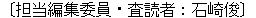
Authors' Profile
| Satoru Ikehara (Member) Senior Research Engineer, Supervisor, the leader of Ikehara Research Group of the Knowledge System Laboratory in the NTT Network Information System Laboratories. Since joining the ECL system in 1969, he has developed a formal algebraic manipulation language, traffic theories and natural language processing systems. He received bachelor's degree, master's degree and Dr. degree from Osaka University in 1967, 1969 and 1983. He was awarded the dissertation prize in 1982 for his research on queuing network analysis from the Information Processing Society. He is a member of the Institute of Electronics, Information and Communication Engineers of Japan, Information Processing Society of Japan and Japan Association for Machine Translation. |
| Masahiro Miyazaki (Member) Professor in Dept. of Information Engineering, Faculty of Engineering, Niigata University since 1989. He had been engaged in the ECL (Electronic Communication Laboratories) system of NTT from 1969 to 1989 and he has engaged in the research and development on the computer system DIPS-11, performance evaluation theories for computer system, Japanese text to speech systems and machine translation system. He is presently researching on natural language understanding/generation and machine translation systems. He received bachelor's degree and Dr. Eng. degree from Tokyo Institute of Technology in 1969 and 1986. He is a member of the Institute of Electronics, Information and Communication Engineers of Japan, Information Processing Society of Japan and Japan Association for Machine Translation. |
| Satoshi Shirai Senior Research Engineer, in the NTT Network Information Systems Laboratories, Since joining the ECL system in 1980, he has developed Japanese analysis systems for natural language processing systems. He is presently developing a machine translation system. He received bachelor's degree and master's degree from Osaka University in 1978 and 1980. He is a member of the Institute of Electronics, Information and Communication Engineers of Japan, and the Information Processing Society of Japan. |
| Akio Yokoo (Member) Senior Research Engineer of the Knowledge Systems Laboratory in the NTT Network Information Systems Laboratories. Since joining the ECL system in 1982, he has developed a frame representation language and a natural language processing systems. He is presently developing a machine translation system. He received a bachelor's degree in 1980 and master's degree in 1982 from the University of Electro-Communications. He is a member of the institute of Electronics, Information and Communication Engineers of Japan and the Information Processing Society of Japan. |
Footnote
*1 Translation with pre-editing pose problems arising from the contents of pre-editing and evaluation becomes complicated. We shall therefore consider work without pre-editing. (Return)
*2 Dependency analysis determines relations between phrases of source text. (Return)
*3 The meanings of output can be understood and then the results can be post-edited without referring the source text. (Return)
*4 This means that translation output can be used for publishing without rewriting. (Return)
*5 With 70% as the passing grade for every sentence in an article, there should be among the unacceptable sentences some 10 to 20% whose meaning can be grasped a little. Then it is estimated that translation which cannot be understood at all would be limited to about 10%. In Saeki(11), a translation ratio of 85% is judged from experience as beig at a level that is practically usable. This ratio includes the portion of translation in which some dubious part remain and therefore it is judged not so different from the standards set forth in this dissertation. (Return)
*6 Test sentences are prepared by the following manner. Arbitrary 100 expression examples were picked up from each kinds of the expression group as shown in Table 2. Test sentences including a example expression are prepared for every 100 example expressions. But, test sentences should be short and easy to translate except the part of the expression to be tested. (Return)
*7 This experiment was conducted as follows. Three test groups of continuous 100 sentences are arbitrary chosen from 1 000 sentences used for the statistical analysis in Sec. 2. And translation results of these test groups are evaluated. (Return)